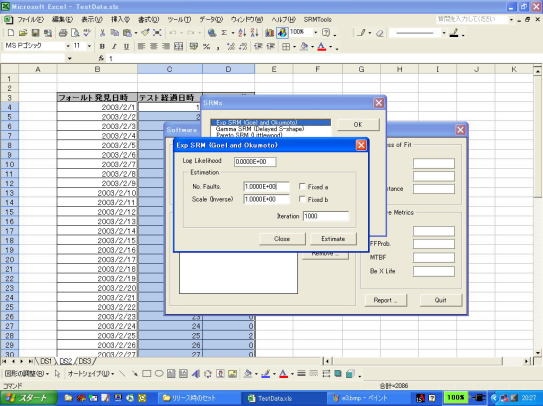

▼目次
概要
 SRATSとは
SRATSとは
SRATS (Software Reliability Assessment Tool on Spreadsheet Software) は，ソフトウェアの品質を高めるために作られたテスト工程管理支援ツールです．

背景と目的
NHPP モデルに代表されるソフトウェア信頼性モデルは 1970 年代に初期のモデルが提案されて以来，多くのソフトウェアフォールトデータへの適合性が検証されています．しかし，実務レベルにおいてソフトウェア信頼性評価が活発に実践されていない理由として，次にあげる
4 つの要因が考えられます．1 つ目の要因は，実際に記録するデータと確率モデルで使用するデータがかけ離れていることです．実際のソフトウェア開発工程では，テストを実施した日時やテストによって発見された障害をすべてを記録しています．しかし，NHPP モデルをとりまく学術的な分野では抽象的な議論が行われており，使用するデータはフォールトが発見された時間（単位を示さない）とする場合が多く見受けられます．すなわち，現場では 2003/5/5 のような年月日で管理されている記録を，ある基準日時からの累積日時へ変換する作業が必要となります．
2 つ目の要因は，実際のデータに適合させるための推定手続きの煩雑さであると考えられます．確率・統計理論に基づいたソフトウェア信頼性評価では，記録したフォールトデータをもとに，モデルパラメータを推定する必要があります．これには最尤法と呼ばれる統計的な推定手法を用います．しかしながら，この作業は数学的には制約のある非線形計画問題を解くことと等価であり，数理に関する専門技術者においても，フォールトデータの種類によっては多くの労力を必要とする厄介な作業です．
3 つ目の要因は，いくつかの確率モデルから適切なモデルを矛盾なく選択することが困難な点にあります．過去 30 年間に発表されたソフトウェア信頼性モデルだけでその数は 250 以上にも及びます．開発現場では，多くのモデルを比較した上で最も適合するものを選択することが理想的ですが，この作業はかなりの専門的な知識を必要とします．
最後の要因は，ソフトウェア信頼性モデル用いてどのようにして信頼性評価を行うかという点です．NHPP モデルでは，最終的にソフトウェア信頼度を通じてソフトウェアの品質を定量的に評価します．この物理的な意味は「規定の時刻までに次のフォールトが発見されない確率」ですが，開発者とってはイメージのつかみにくい尺度となっているため，信頼性尺度を出してみたもののどのような管理を行うべきかと言った問題が生じます．
これらの問題点から，開発すべきソフトウェア信頼性評価支援ツールにおける要件を以下のように設定します．
- 要件 (i)： 確率モデルで使用するフォールトデータを簡単に加工できること
- 要件 (ii)： 推定作業における専門性を排除したインターフェースであること
- 要件 (iii)： どのようなデータであっても確実に推定値が算出されること
- 要件 (iv)： モデルの多様性を維持しながら，必要最低限の数の確率モデルを用意すること
- 要件 (v)： いくつかの適合性尺度に基づいてモデルの比較が容易に行えること
- 要件 (vi)： 利用しやすい信頼性評価尺度の導出を行うこと
要件 (iii) は推定技術に関する技術です．従来から用いられている Newton 法やそれに準じた手法によるパラメータ推定では，初期値の決定に対して経験則や専門的な知識が必要となります．そこで，本ツールでは EM アルゴリズムを用いたパラメータ推定手法を採用しました．これは大域的な収束性をもつという性質から初期値の決定を神経質に行う必要がなくなり，専門的な知識なしにどのようなデータに対しても推定値の算出が可能となります．
要件 (iv) はモデルの分類に関する問題です．NHPP モデルは数多く提案されているため，そのすべてを網羅することは不可能です．従って，いくつかの代表的なモデルを選択する必要があります．ここでは，単一フォールトの発見時間分布がモデルの違いを表現することに着目して，フォールトの発見時間が以下の理論分布に従うモデルを扱います．
- 指数分布
- ガンマ分布（形状パラメータは既知）
- パレート分布
- （対数）正規分布
- （対数）ロジスティック分布
- （対数）極値分布（最大値型，最小値型）
要件 (v) により，既存の評価尺度が算出できるだけでなく，モデル間の比較が容易に行える構造を取り入れる必要があります．そこで，本ツールではユーザが所望するモデルをいくつでも追加して比較が行える仕組みを取り入れました．これを実現するための技術的な基盤は，オブジェクト指向によるプログラミングであり，具体的には，1 つの確率モデルを単一のオブジェクトとみなす設計を行いました．また，評価尺度としては従来の研究でも多く用いられている AIC，BIC，KS 統計量，MSE を算出します．
要件 (vi) は，ソフトウェア信頼度だけではなく，他の尺度を同時に算出する必要があることを示しています．そこで，現時点でソフトウェア内に潜在するすべてのフォールが除去されている確率を表す Fault-Free 確率と，次のフォールトが発見されるまでの平均時間の代替尺度である条件付き MTBF，およびソフトウェア信頼度が 0.1 に低下する時刻 Be-Ten-Life を算出します．これらの尺度は，時間的なふるまいを検証する必要のあるソフトウェア信頼度よりも，開発者にとっては利用しやすい尺度であると思われます．また，時間経過を見る必要のある累積期待フォールト発見数やソフトウェア信頼度も，Excel のグラフ作成機能を用いて自動的に描画する機能を実現しました．
ツールの特徴
SRATS の特徴を以下に列挙します．
- Excel のフォーム機能によるユーザーインターフェース
- データの入力はセル選択により行い，その入力形式を自動判別する（扱えるデータ形式は，フォールト発見時刻列あるいは個数データ列）
- 1 つのフォールトデータに対して複数のモデルを適用し，フォーム上で AIC, MSE, KS 統計量によるモデル比較ができる
- 適当な初期パラメータと繰り返し回数（推定精度に影響）を与えることで，どんなフォールトデータに対してもモデルパラメータを推定することができる
- レポート出力機能により，より詳細な比較が可能
設計概要
本ツールは Excel の VBA (Microsoft Visual Basic for Application) で構築された部分と動的リンクライブラリ
（DLL） 部分から構成されます．DLL は，WindowsOS において，プログラムの実行時にリンクされる外部プログラムです．推定などの計算処理を
DLL 内で行うことによって，より高速な数値計算を可能にします．なお，DLL の開発には
Microsoft Visual C++ を使用しました．VBA から呼び出される DLL の関数を以下に示します．| 関数名 | 機能 |
|---|---|
| faultDataStatistics | 入力したデータの統計情報（個数，平均など）を返す． |
| goodnessOfFit | モデルの適合性評価尺度（AIC, MSE, KS 統計量など）を返す． |
| softMetrics | モデルによる予測値（総潜在フォールト数，MTBF など）を返す（※平均と分散は未実装）． |
| setTimeDomain | フォールトデータをセットする（時刻データ）． |
| setIntervalTime | フォールトデータをセットする（個数データ）． |
| addToSRM | 適用するモデルを追加する． |
| parameterEstimation | モデルパラメータの推定を行う． |
| setParaValues | モデルパラメータの値をセットする． |
| getParaValues | モデルパラメータの値を返す． |
| calcLLF | 対数尤度を計算する． |
| getFaultData | セットされているフォールトデータを返す． |
| getMeanValues | 指定した時刻の平均値関数の値を返す． |
| getReliValues | 指定した時刻のソフトウェア信頼度を返す． |
ライセンス
- 本ソフトウェアはフリーソフトウェアです．
- 本ソフトウェアの著作権は開発者に帰属します．
- 個人利用に関するVBAコードの改変は自由です．
- DLL部分に関してはオープンソース化を予定しております．
- 以下の事項を守るのであれば，本ソフトウェアを転載・再配布して構いません．
- 配布物の内容を変えない．
- バージョンアップ，バグフィクスをした場合、頒布者はなるべく最新版の再頒布を行う．
- 文献の引用を行う（文献へのリンク）．